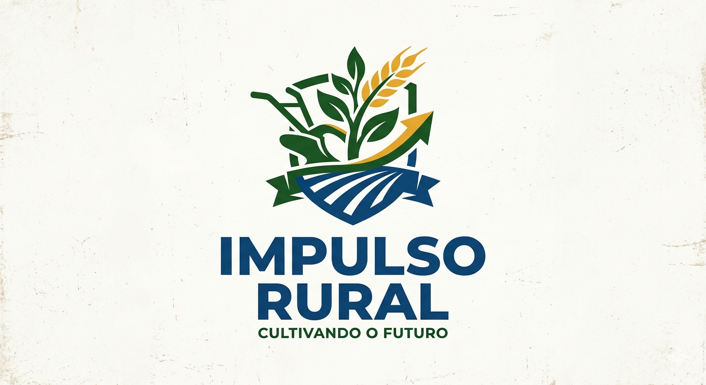

Impulso Rural



O agronegócio é a base da economia e da segurança alimentar global, mas sua eficiência atual só existe graças à evolução dos tratores. Essas máquinas transformaram o trabalho braçal em alta performance, permitindo expandir lavouras e aproveitar as janelas ideais de plantio e colheita. Hoje, equipados com GPS e tecnologia de ponta, os tratores guiam a agricultura de precisão, reduzindo o desperdício de insumos e o impacto ambiental. Assim, a força da mecanização impulsiona a produtividade no campo, gerando riquezas e garantindo o alimento na mesa de milhões de pessoas.
A preservação ambiental e as mudanças climáticas tornaram-se os temas mais urgentes da geopolítica global neste século. A transição para matrizes energéticas limpas, como a solar e a eólica, deixou de ser uma alternativa ecológica para virar uma necessidade econômica. Governos e corporações correm contra o tempo para reduzir as emissões de carbono e adotar práticas de economia circular. O grande desafio atual é equilibrar o crescimento industrial com a conservação das florestas e dos oceanos. Afinal, garantir a saúde do planeta é a única forma de viabilizar a sobrevivência das futuras gerações.